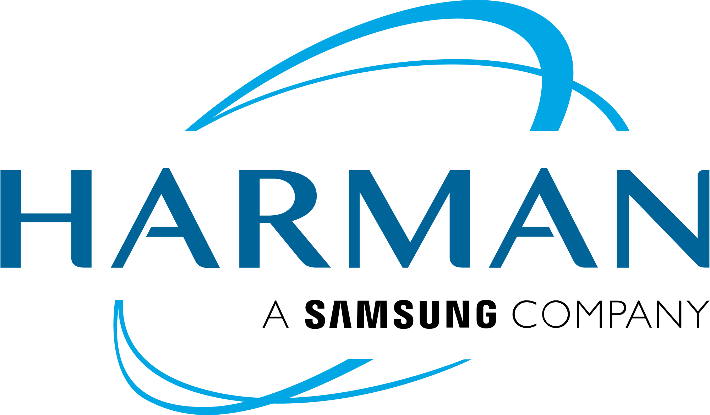

Get to know me
About Me
From my high school days, I've been deeply passionate about research in both Mathematics and Defence Technologies.
During the second semester of my undergraduate studies, I reached out to Dr. Pathipati Srihari, expressing my keen interest in radar systems and requesting his guidance to pursue research under his mentorship. Since then, I've remained committed to the field of radar, continuously exploring its depths and applications.
During this period, I was also able to engage in a long-term collaboration of three and a half years with my industrial advisor, Dr. Bethi Pardhasaradhi.
My undergraduate peers often called me 'Radar Boy' because of my weird obsession with radar — a nickname I eventually embraced myself.
Currently, I'm pursuing a Master's degree in Engineering Sciences, with a mention in Electrical Engineering, at the Faculty of Physical and Mathematical Sciences (FCFM), University of Chile, where I carry out my research under the supervision of Prof. Martin Adams. The project is funded by the U.S. Air Force Office of Scientific Research (AFOSR).
Before moving to Chile, I worked at Harman International (India) — first as a research intern and then as a research engineer, until February 2026 — focusing on in-cabin sensing technologies. Earlier, I spent nearly four years as an undergraduate researcher under Dr. Srihari, gaining extensive hands-on experience in radar signal processing and estimation theory.
Education
University of Chile — FCFM
M.Sc. in Engineering Sciences (mention in Electrical Engineering)
2026 – Present
National Institute of Technology Karnataka, Surathkal
B.Tech in Electronics and Communication Engineering (ECE)
2020 – 2024
Experience

Harman International, India
Research Engineer · In-Cabin Sensing Sep 2025 – Feb 2026
Research Intern · In-Cabin Sensing May 2025 – Aug 2025